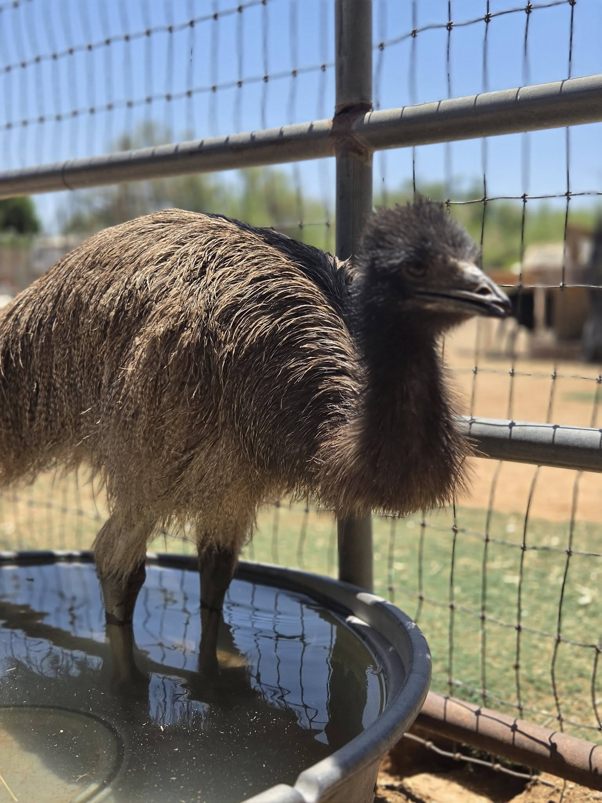

Volunteer with the Haven
Your skills can make a real difference.
From organizing a fundraiser to helping with an outdoor project, reliable volunteers give Crystal more time to focus on the animals who need her.
Text Crystal to VolunteerBefore coming to the Haven: Please text first. Volunteer needs change, and all visits and projects must be arranged in advance.

Current volunteer needs
Bring what you do best.
The Haven is currently looking for dependable people who can help with practical, behind-the-scenes work. You do not need animal-care experience to make a meaningful contribution.
A quick note about volunteering: Opportunities depend on the Haven's current workload and the animals in care. Text Crystal with the type of help you can offer, your general availability, and any relevant experience.
Text 480-220-6930
Not ready to volunteer?
Help stock the Haven
Food, formula, bedding, cleaning supplies, habitat equipment, and medical supplies are ongoing needs. Text Crystal to ask what is most useful right now, or make a general donation toward animal care.